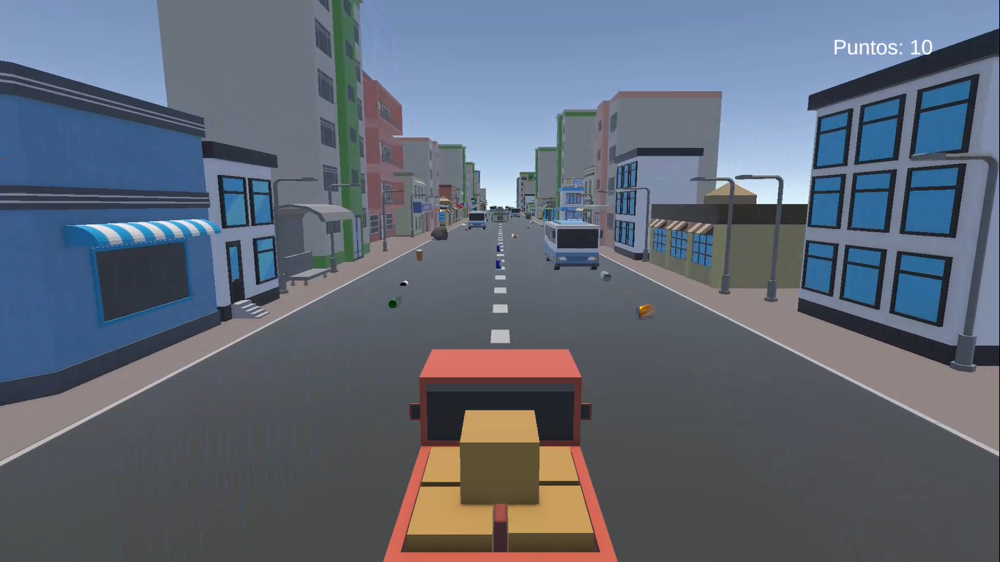
01 / CONDUCCIÓN
Conduce
Controla tu vehículo y domina cada tramo de la carretera.
Acelera, esquiva obstáculos y descubre nuevos escenarios. Cada kilómetro es una oportunidad para superar tus límites.
EcoRider es un videojuego de conducción y aventura en el que debes esquivar obstáculos, recoger puntos y superar tus propios récords.
Historia: En Eco Rider, el jugador se embarca en una emocionante aventura de conducción donde deberá recorrer diferentes caminos, esquivar obstáculos y recolectar puntos para alcanzar la mayor puntuación posible. Cada recorrido representa un nuevo desafío en el que la habilidad, los reflejos y la concentración serán fundamentales para superar sus propios récords.
Género: Conducción y aventura.
Público objetivo: Niños y jovenes de 8 a 18 años

Controla tu vehículo y domina cada tramo de la carretera.
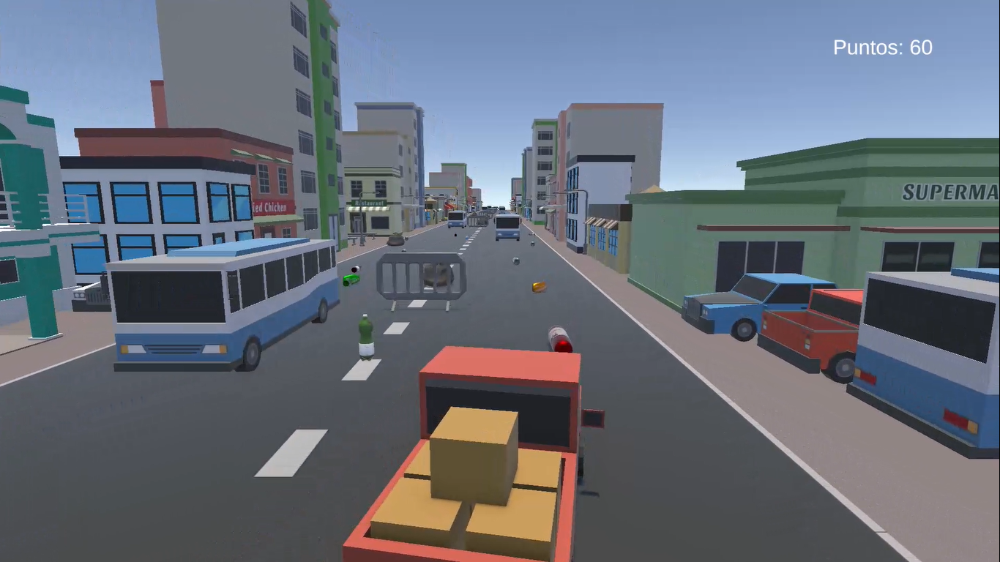
Evita vehículos y obstáculos para continuar tu recorrido.
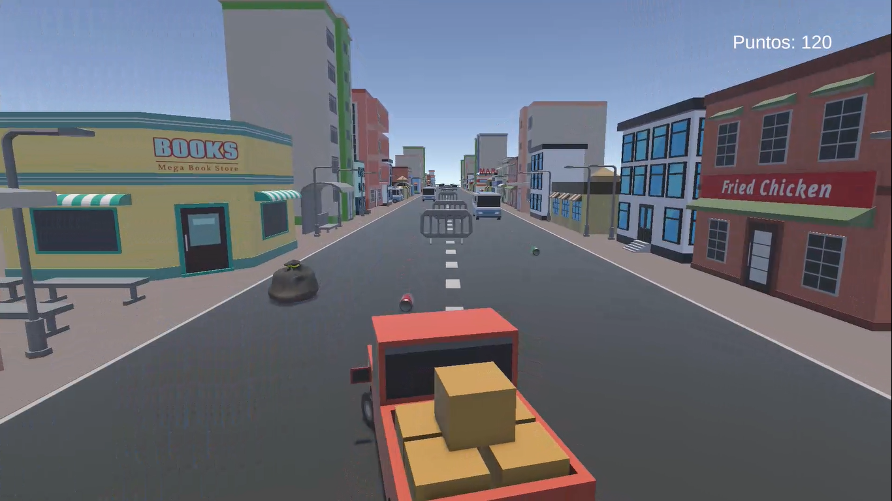
Recoge objetos y busca superar tu mejor puntuación.
El objetivo es sencillo: llegar lo más lejos posible. Mantente en la carretera, evita las colisiones y consigue todos los puntos que puedas.
Aprende a jugar ↗Diferentes escenarios, vehículos para elegir y nuevos récords por conquistar.
Recorre ambientes distintos y descubre nuevos lugares mientras avanzas.
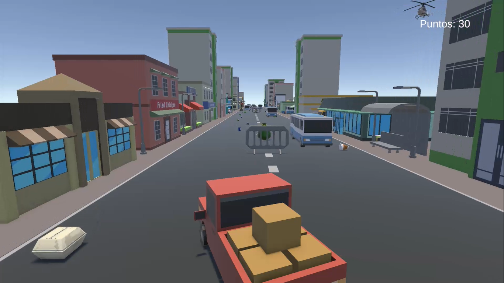
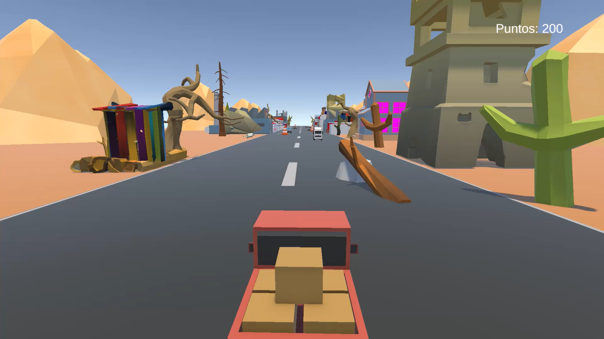
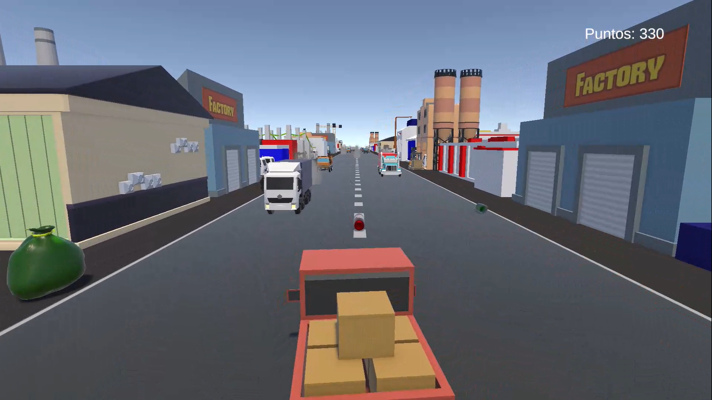
Selecciona tu vehículo favorito y comienza tu desafío.
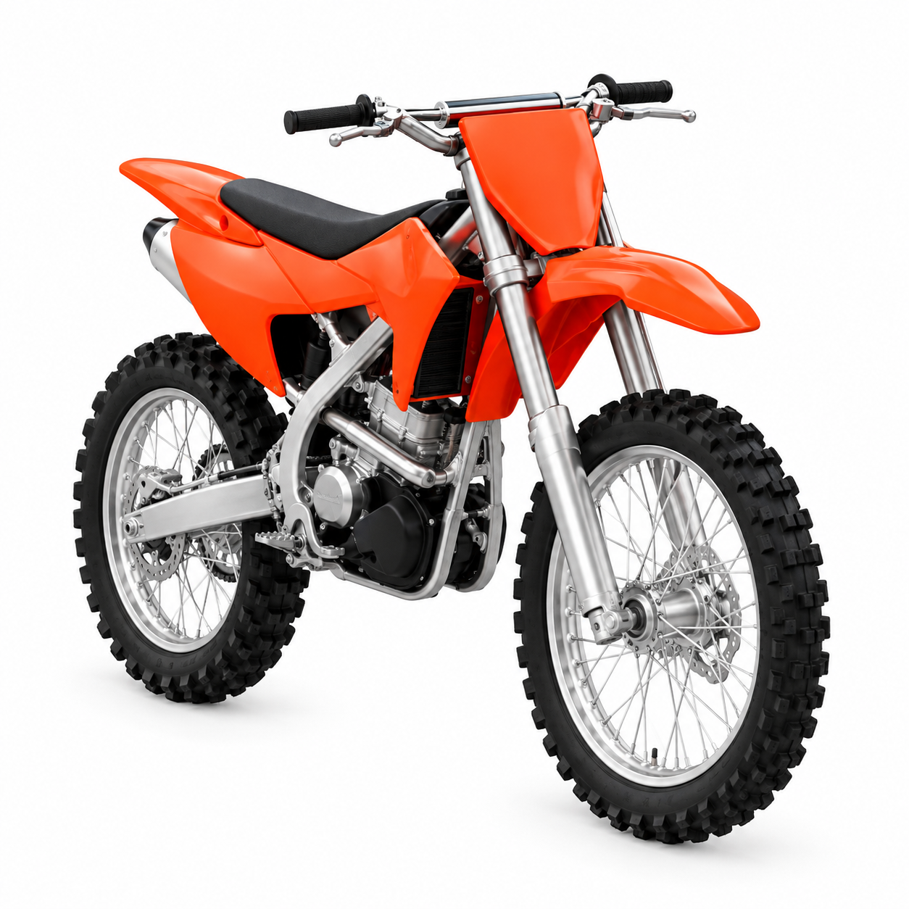
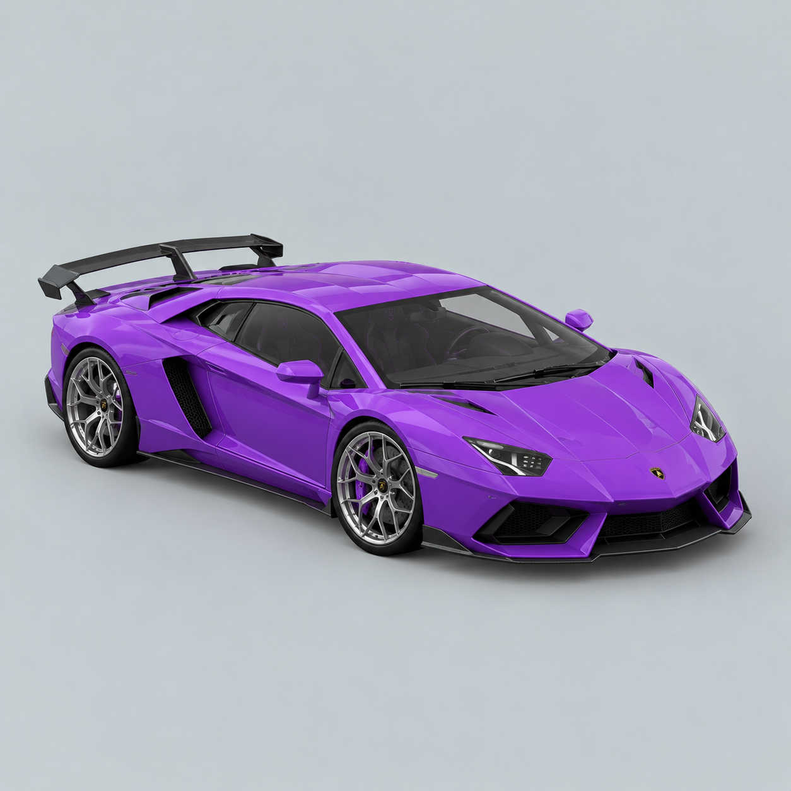
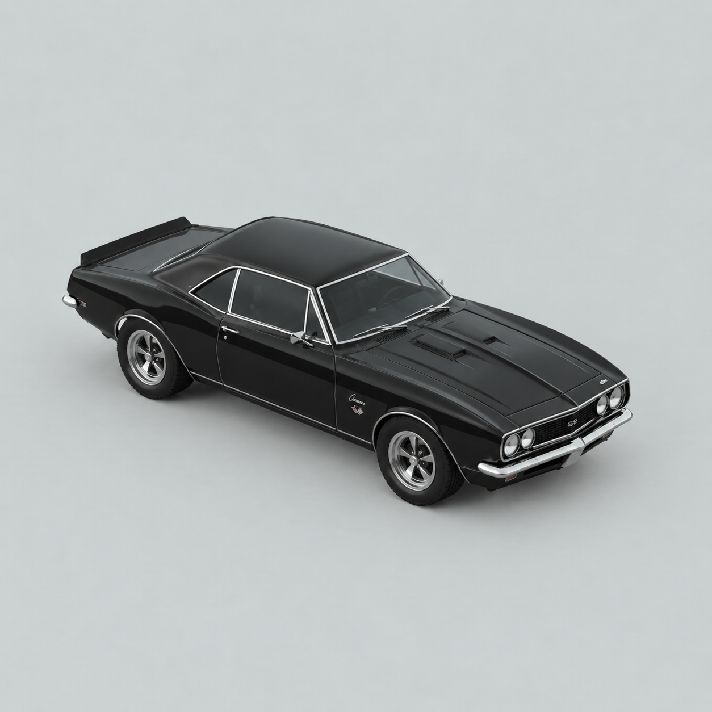
Cada intento cuenta. Consigue más puntos y supera tus resultados anteriores.
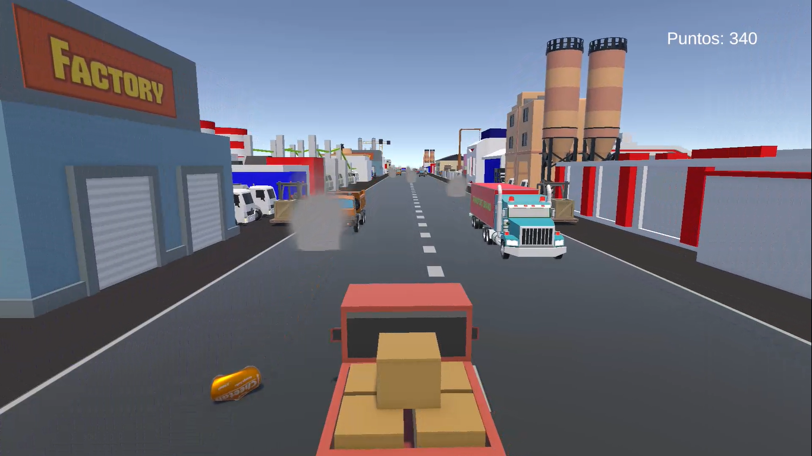
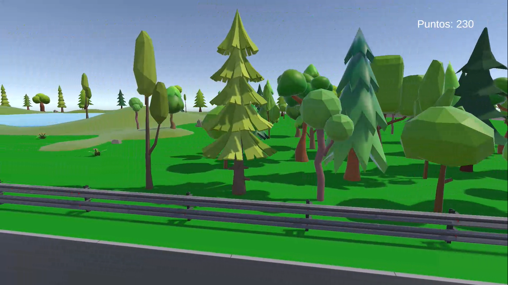
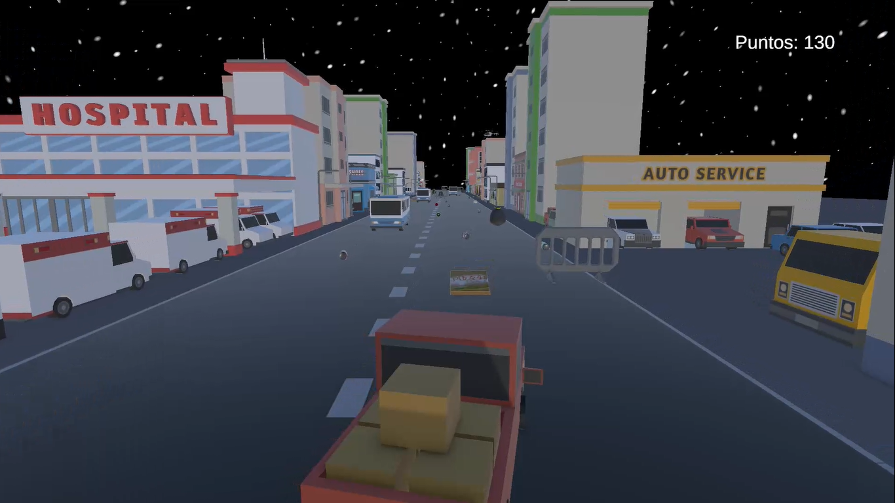
Descubre cómo se vive Eco Rider antes de comenzar tu propia partida.
Selecciona tu favorito para comenzar.
Avanza por la carretera y evita los peligros.
Recoge objetos y supera tu récord.
Evita colisiones, recoge objetos y busca obtener la mayor puntuación posible.
Controles: "A": Izquierda "D": Derecha.
Fin de partida: Chocar con un vehiculo, obstaculo o cnstruccion.
La carretera te espera. Descarga Eco Rider y comienza a jugar.
↓ Descargar videojuego Archivo ZIP del videojuegoInformación técnica, académica y legal relacionada con el desarrollo del videojuego.
Sistema operativo: Windows 10
Procesador: Intel Pentium
Memoria RAM: 6GB
Tarjeta gráfica: Intel HD Graphics 610
Espacio disponible: 100MB
Periodo: 4/5/2026 - 16/05/2026
Objetivo: Definir los requerimientos, alcance y características principales de Eco Rider.
Actividades: Investigación de herramientas de desarrollo, definición de la temática ambiental, planificación de funcionalidades y distribución de responsabilidades.
Resultados: Se establecieron los objetivos del proyecto, las funcionalidades principales y un plan de trabajo para su desarrollo.
Periodo: 18/05/2026 - 01/06/2026
Objetivo: Diseñar los elementos visuales y la estructura del videojuego.
Actividades: Diseño de escenarios, personajes, elementos gráficos e interfaz de usuario, utilizando herramientas de diseño e inteligencia artificial como apoyo.
Resultados: Se obtuvieron los recursos gráficos y la propuesta visual necesaria para comenzar la implementación.
Periodo: 8/06/2026 - 3/12/2026
Objetivo: Implementar las mecánicas y funcionalidades principales de Eco Rider.
Actividades: Integración de escenarios, programación de controles, implementación de mecánicas de juego y realización de pruebas para detectar errores.
Resultados: Se obtuvo una versión funcional del videojuego con sus mecánicas principales implementadas.
Periodo: 10/09/2026 - 13/11/2026
Objetivo: Desarrollar una página web profesional para presentar y distribuir Eco Rider.
Actividades: Desarrollo de la estructura HTML, diseño con CSS e implementación de funcionalidades con JavaScript. Integración de imágenes, video demostrativo y descarga del videojuego.
Resultados: Se desarrolló una página web adaptable a diferentes dispositivos, con información del proyecto.
Jared Chavez Hernandez — Programador
Vanesa Ponce Covarrubias — Programador
David Martínez Quinatanar — Diseñador
Motor del videojuego: Unity.
Lenguajes del juego: C#
Herramientas: Visual studio 2022.
Sitio web: HTML, CSS y JavaScript.
Jared Chavez Hernandez — Programador
Vanesa Ponce Covarrubias — Programador
David Martínez Quinatanar — Diseñador
Fuentes de recursos: Unity Asset Store.
Tipografías utilizadas: Barlow Condensed y DM Sans, obtenidas mediante Google Fonts.
Eco Rider es un proyecto desarrollado con fines académicos y educativos. El código fuente, los diseños originales y los elementos propios del videojuego se encuentran protegidos bajo la modalidad de todos los derechos reservados. No se permite su reproducción, modificación, distribución o comercialización sin la autorización previa de sus respectivos autores, salvo los usos permitidos por la legislación aplicable.
Los recursos externos utilizados en Eco Rider, como imágenes, modelos 3D, sonidos, música, tipografías y herramientas de desarrollo, pertenecen a sus respectivos autores y propietarios. Su utilización está sujeta a las condiciones establecidas en sus licencias originales. Los recursos que requieran atribución deberán incluir los créditos correspondientes.
No se concede ninguna licencia adicional por defecto.
Eco Rider es un proyecto académico que respeta la privacidad de sus usuarios. Tanto el videojuego como su página web no solicitan, recopilan, almacenan ni comparten datos personales de los jugadores o visitantes. No es necesario crear una cuenta, registrarse ni proporcionar información personal para utilizar el videojuego.
El videojuego funciona de manera local y no requiere conexión a servidores externos para su ejecución. No se utilizan herramientas de análisis de usuarios, sistemas de seguimiento ni servicios de recopilación de información. Los archivos necesarios para el funcionamiento del juego se encuentran almacenados localmente.
El equipo de desarrollo de Eco Rider es responsable de mantener la transparencia respecto al funcionamiento del proyecto. Debido a que no se recopilan datos personales, no se realizan actividades de tratamiento de información personal de los usuarios. Para cualquier duda relacionada con la privacidad, se puede contactar al equipo mediante los medios indicados en la sección de contacto de esta página.
Clasificación sugerida: Eco Rider está recomendado para usuarios de 8 años en adelante. Es un videojuego desarrollado con fines educativos y de entretenimiento, cuyo contenido está orientado a promover la conciencia ambiental mediante una experiencia interactiva. No contiene violencia explícita, lenguaje ofensivo ni contenido inapropiado para menores de edad
Advertencias: Eco Rider no incluye destellos luminosos intensos, efectos visuales parpadeantes, sonidos excesivamente fuertes ni elementos gráficos sensibles. Su diseño busca ofrecer una experiencia de juego accesible y agradable. Se recomienda utilizar un volumen moderado, mantener una distancia adecuada de la pantalla y realizar descansos periódicos durante sesiones prolongadas.
EcoRider se presenta como proyecto académico con fines educativos.
Se proporciona en su estado actual, sin garantías expresas de funcionamiento ininterrumpido o compatibilidad con todos los equipos, dentro de los límites permitidos por la legislación aplicable.
Para reportar problemas técnicos, solicitar información o consultar asuntos legales, comunícate mediante:
ecorideroficial@gmail.com
Uso de inteligencia artificial: Durante el desarrollo del proyecto Eco Rider, se utilizaron herramientas de inteligencia artificial, principalmente ChatGPT, como apoyo en distintas etapas de investigación, diseño y programación.
Generación de imágenes: Se utilizaron herramientas de inteligencia artificial para crear y proponer recursos gráficos relacionados con el videojuego y su página web, incluyendo imágenes ilustrativas y elementos visuales.
Investigación y documentación: La inteligencia artificial se empleó como herramienta de consulta para obtener explicaciones, organizar información, mejorar la redacción de contenidos y apoyar la elaboración de documentación técnica y académica relacionada con el desarrollo de Eco Rider.
Desarrollo y revisión de código: Se utilizó inteligencia artificial como apoyo para generar propuestas de código, identificar posibles errores, mejorar estructuras de programación y optimizar funcionalidades del proyecto, incluyendo el desarrollo de la página web mediante HTML, CSS y JavaScript.
Supervisión y responsabilidad: La inteligencia artificial se utilizó como una herramienta complementaria y no como sustituto del trabajo del equipo. Los integrantes del proyecto son responsables de revisar, probar, adaptar y validar los contenidos, recursos gráficos y fragmentos de código utilizados en la versión final de Eco Rider.